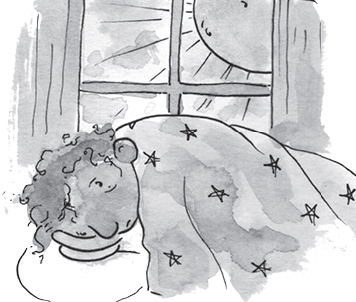
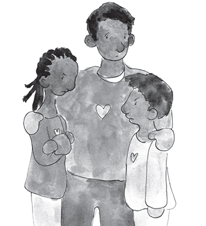

THE ARIO
INFORMATION FOR ADULTS
FAMILIES FIGHT COVID-19 TOGETHER
HOUR AFTER HOUR FAMILIES AT HOME
Before COVID-19, we wished for days when families could get extra time together. We welcomed days when Dads and Mums had no work or other things to do and children had no school and we could spend our days together. With COVID-19, too much of that wish came true. Now, stuck together day after day, we often wish for more to do. Yet, it seems we need to get used to being at home and surrounded by family more. Rather than wake up every morning dreading the day, it seems best to find new ways to improve being home.
AGREE ON A DAILY ROUTINE

Families need routines for a set time to wake up - eat - go to sleep. It is good for everyone to have chores and share responsibilities for cooking and cleaning. Clear plans for how adults and children have space to do schoolwork or adult work at home are critical. What to do for fun also takes some family planning since the usual home activities may have become boring. It’s also not healthy for families to just sit around so exercise and fresh air needs to be part of a plan. And, like Sasha said, a bit of time alone and space for oneself, feels good.
TALK IT OUT
Continaul family togetherness can lead to short tempers and disagreements. It is best for adults to agree with children on a few treasured ways to manage problems. As example, when a disagreement becomes tense and words and actions are making it worse it is best to separate. Always best to avoid saying or doing things in the heat of the angry moment you will later regret. Moving to a separate space or corner and using slow breathing to relax and cool down is helpful.

It can be useful to involve a third party to mediate and help to solve the issues. Then, you can return to be together after you agree you are cool enough to talk. Problems are best solved with talk!
Each person talks - one by one - and everyone listens. The goal is to solve the problems, so we need to stay positive and not blame or accuse the other or keep a grudge. Learning to compromise, where each person feels heard leads to solving problems together and giving all people some of what they want.